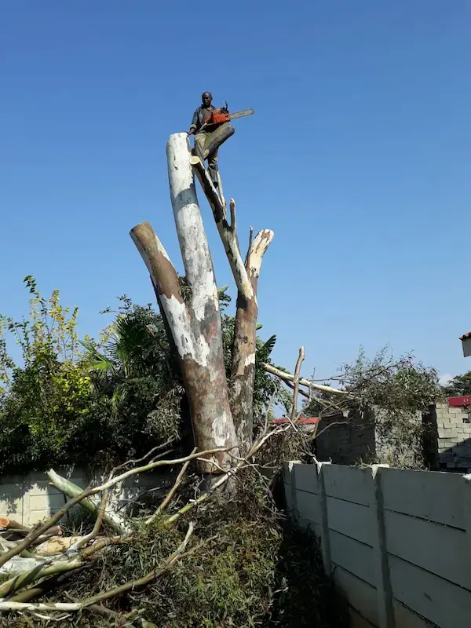
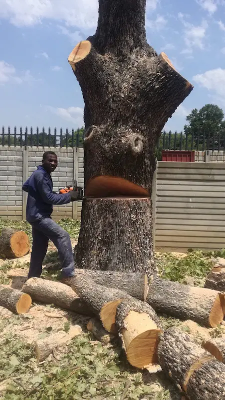
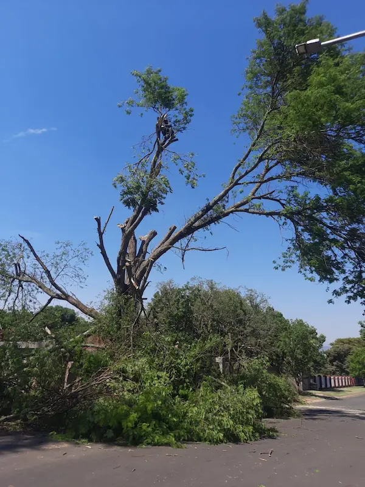
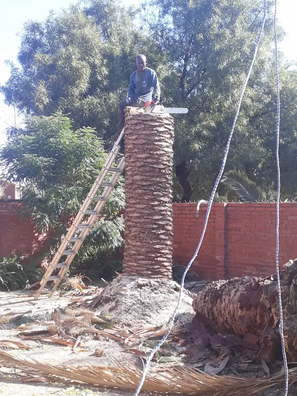
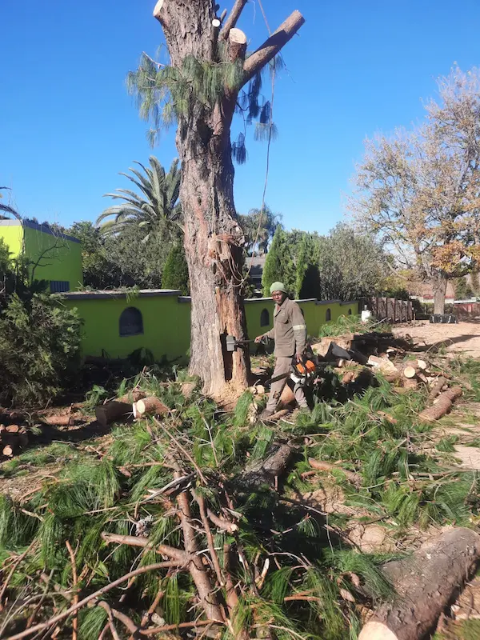
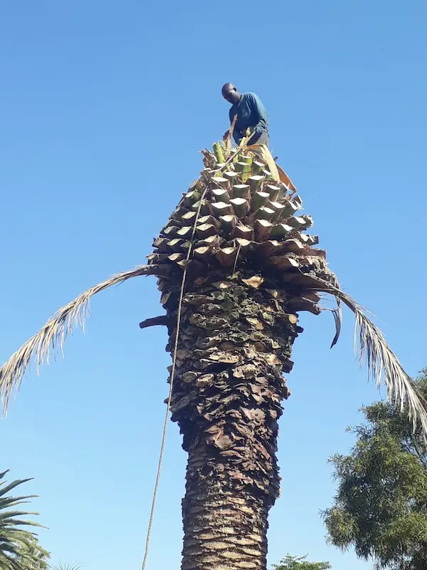
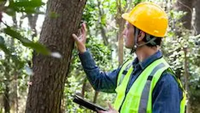

Professional tree removal, emergency storm response, stump grinding, and site clearance across Newcastle, Madadeni, Osizweni, Dundee & Dannhauser. Fast. Safe. Clean finish every time.
Storms don't wait for business hours — and neither do we. Whether a tree has fallen on your roof, blocked your driveway, taken down a fence, or snapped branches are hanging dangerously close to power lines, Mr Cutter responds fast.

From emergency tree removal to routine trimming, we handle the full scope of tree work — safely, cleanly, and efficiently.

Trees causing danger, blocking access, damaging property, or simply in the wrong place. We cut and remove safely — including debris cleanup.
Get a Quote →
Fallen trees, snapped branches, storm-damaged trees leaning toward structures. We respond fast — day or night, weekends included.
Call Now →
Tree stumps are a trip hazard, an eyesore, and can cause regrowth problems. We grind them down cleanly so you can reclaim your yard or building site.
Get a Quote →
Preparing a site for building, renovation, or property cleanup? We clear trees, stumps, shrubs, and bulk vegetation — leaving you a clean, ready site.
Get a Quote →
Overgrown palms, out-of-shape hedges, or dense vegetation encroaching on your property. We trim, shape, and remove to keep your outdoor space neat.
Get a Quote →
Unsure if a tree is dangerous? We'll check trees near your roof, fence, driveway, wall, or power lines and give you a clear, practical assessment before you decide anything.
Request Assessment →No complicated forms. No waiting days for a callback. Here's how it works:
Take a few photos of the tree or area. Include your suburb, urgency level, and any access notes (tight driveway, nearby power lines, fences, etc.).
We review your photos and get back to you quickly with a quote estimate or confirm a site visit if the job needs a closer look.
Our team arrives on time, works safely, and leaves your property clean. No mess left behind.
There are a lot of people with a chainsaw and a bakkie. Mr Cutter is different. We assess the site before we quote, we work safely around obstacles, and we leave your property clean.
We've worked on residential gardens, commercial properties, building sites, and storm-damaged properties. We know how to handle trees near power lines, tight driveways, fences, roofs, and walls — and we'll tell you the risks upfront.
Call to Discuss Your JobWe don't leave you waiting — especially in an emergency. Call or WhatsApp and we respond promptly.
Every job is assessed for risks before we start. We work carefully around roofs, fences, vehicles, and power lines.
We take the debris with us. You won't be left with branches, logs, or mess when we're done.
We're based in Newcastle. We know the area, the roads, the suburbs. No outsourced crews guessing where you are.
We'll tell you exactly what needs doing and what doesn't. No upselling. No unnecessary work.
From a single garden tree to bulk site clearance — we scale to the job.
We serve Newcastle and the broader area — including townships, farms, and commercial zones. Not sure if we cover your area? Just ask.
Our home base. We cover all suburbs — residential, commercial, and industrial.
Residential and emergency tree removal services in Madadeni.
Tree cutting and clearance services available in Osizweni.
Tree removal, stump grinding, and storm response in Dundee.
Tree services and site clearance available in Dannhauser.
Not listed here? Call or WhatsApp us — we may still be able to help depending on the job.
Check Your Area →Don't guess. If you've got a tree leaning toward your roof, cracked branches over your driveway, roots lifting your paving, or overgrowth near your fence or power lines — send us photos or request a site visit. We'll give you a straight answer.
📸 Send Photos for AssessmentYes. We offer 24/7 emergency tree removal and storm damage response. If you have a tree down, a dangerous hanging branch, or an urgent hazard — call us immediately on 082 232 2924 or send a WhatsApp message.
Absolutely — this is the quickest way to get a quote. Send us photos of the tree or area, your suburb, urgency level, and any relevant notes (tight access, nearby structures, power lines, etc.) on WhatsApp to 082 232 2924. We'll respond promptly.
Yes. We service Newcastle and the surrounding areas including Madadeni, Osizweni, Dundee, and Dannhauser. Not sure if we cover your exact area? Call or WhatsApp us and we'll confirm.
Yes, this is a common part of our work. We assess the risks involved before starting any job and work carefully around structures, fences, vehicles, and power infrastructure. If there are specific hazards on your site, tell us when you make contact so we can plan accordingly.
Yes. Stump grinding is one of our standard services. We can grind stumps left from a previous job or from trees we've just removed. Stump removal eliminates trip hazards, improves the look of your yard, and prevents regrowth problems.
Yes. Site clearance is one of our main services. Whether you're preparing for a building project, renovation, or property cleanup, we can remove trees, stumps, shrubs, and bulk vegetation to give you a clean, ready site.
Yes. For straightforward jobs, we can often give you a quote estimate based on photos and a description. For larger or more complex jobs, we may arrange a site visit to give you an accurate final quote. Either way, there's no obligation to proceed.
The more context you give us, the better. Ideally, send us: a few photos of the tree or area, your suburb or full address, the urgency level (emergency / planned / flexible), and any access notes such as a tight driveway, nearby power lines, a low fence, overhanging roof, or a locked gate.
Call us, WhatsApp us, or send photos. We'll respond fast and get your job assessed without hassle.
The quickest way to get started. Send us a message with the details below and we'll come back to you fast: